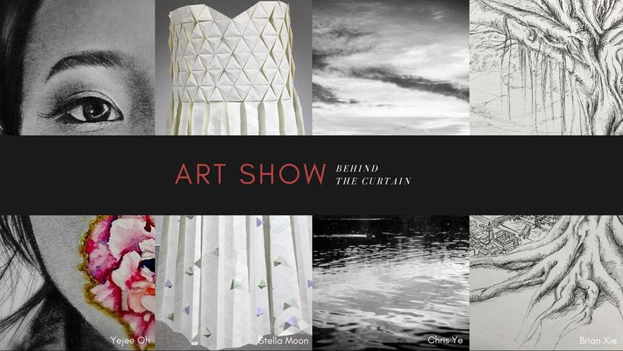

We Are Asian American Association
We are focused on offering a great experience here at Notre Dame. We celebrate Asian American heritage in a variety of ways, providing support for Asian American students and promoting an awareness of not only Asian American issues but also diversity in all its forms.
Upcoming Events

First Year Retreat 2019
Camp Epworth
September 6-7
24 Hours 4PM-4PM
First Year Retreat is a collaborative effort between AAA and Notre Dame Campus Ministry designed to provide first-years with the opportunity to explore identity, foster friendship and community, and develop spirituality.
This year's theme is "Breaking Gounnd," and AAA is proud to have Matt Cabrera and Calais Nobuhara as retreat leaders!
This retreat is cost free and transportation will be provided!
Asian Allure 2018: Behind the Curtain
Washington Hall Mainstage
November 2&3
7PM
Asian Allure is AAA's annual cultural show, showcasing performances from umbrella clubs including KSA, VSA, CCS, and FASO.
This year's theme is "Behind the Curtain," and AAA is proud to have Alyssa Ngo as director! Each year, Asian Allure strives to both entertain and educate its audience by shedding light on cultural elements within Notre Dame’s underrepresented, yet dedicated Asian and Asian-American population. By focusing on the element of education, this year’s theme in particular explores the variety of ways through which Asians, Asian Americans, and Asian culture can be hidden or misunderstood. Our hope is that the audience will leave with a heightened awareness, appreciation, and understanding of Asian culture in order to encourage more meaningful conversation based on a shared foundation of knowledge. Through story-telling, performance, and the arts, we invite our audience to take a look “Behind the Curtain” to see the variety of traditions and talents that our community has to offer.
Tickets are available at the LaFortune Box Office for $5. Tickets will be $7 at the door. Doors open at 6:30PM.


Asian Allure Art Show
Washington Hall 110
November 3
2-5PM
For the first time ever, Asian Allure will be hosting an ART SHOW! This event is focused on catering to visual arts in addition to the performing arts, giving artists within the community a chance to show off their talents in a gallery. There is no entry fee, but we encourage donations to support South Bend's Center for the Homeless. We invite you to stop by to look at the works of our talented AAA members! Snacks and refreshments will be provided.
First Year Fall Retreat 2018
Michiana Christian Service Camp
August 24–August 25, 2018
4:00PM – 4:00PM
Come participate in one of the most successful retreats on campus! The retreat takes place within the first few weeks of school, so it's a great way to meet people and make new friends.
All Notre Dame, Holy Cross, and Saint Mary's first years are welcome to attend this free event!
For more information or to sign up, click here!